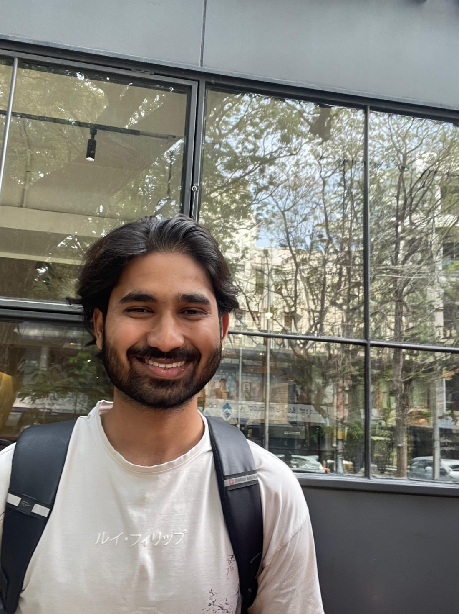

Jay Agarwal
Hi! I'm a 4th year dual major in Physics and Computer Science at BITS Pilani. I'm interested in AI for physics, especially LHC, neutrino and quantum systems. I love studying Physics and Maths in general, Group Theory especially, and I've been trying to read more particle physics and QFT.
I have a large backlog of almost-finished projects from the past year or two unfortunately :( This website is one of them. So, please don't mind if some things are not working :)
experience
I work with Prof. Dhruv Kumar in the PhantomGrad lab at BITS on mechanistic interpretability and distillation of symmetry-aware models for the LHC, which sent me down a rabbit hole into mech interp more broadly.
I'm also part of the TAMBO Collaboration, working with Tommaso Dorigo and the MODE Collaboration on optimizing detector layouts using differentiable programming for the upcoming TAMBO neutrino observatory.
This fall, I'll be a Visiting Researcher at KEK, Japan, working on LLMs and deep learning for high energy physics.
In the past, I interned at DRDO's Quantum Technology division with Dr. Poornendu Chaturvedi, working on atomic frequency standards. I also worked with Prof. Amol Holkundkar at BITS on simulating radiative recombination in intense laser fields.
I have also interned at Wells Fargo as a Quant Analyst in the Causal Inference team, picking up a bit of the math used in finance along the way.
research
projects
Detecting Quantitative Spatial Inconsistencies in Vision-Language Outputs via Residual-Aware Graph Reasoning
Deep Learning course project
Beating Hallucinations via Uncertainty-Conditioned Attention Gating
Intro to LLMs course project
Monte Carlo Methods in Physics
Computational Physics course project
misc
to be updated